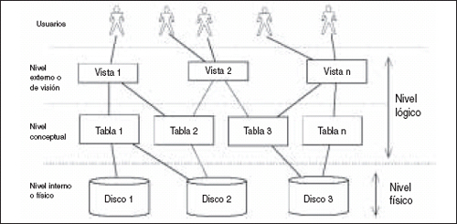

Un sistema de bases de datos es una colección de datos interrelacionados y un conjunto de programas que permiten a los usuarios tener acceso a esos datos y modificarlos. Una de las principales finalidades de los sistemas de bases de datos es ofrecer a los usuarios una visión abstracta de los datos. Es decir, el sistema oculta ciertos detalles del modo en que se almacenan y mantienen los datos.
Dado que muchos de los usuarios de sistemas de bases de datos no tienen formación en informática, los desarrolladores ocultan esa complejidad a los usuarios mediante varios niveles de abstracción para simplificar la interacción de los usuarios con el sistema:

- Nivel físico. El nivel más bajo de abstracción describe cómo se almacenan realmente los datos. El nivel físico describe en detalle las estructuras de datos complejas de bajo nivel.
- Nivel lógico. El nivel inmediatamente superior de abstracción describe qué datos se almacenan en la base de datos y qué relaciones existen entre esos datos. El nivel lógico describe toda la base de datos en términos de un número pequeño de estructuras relativamente simples. Los usuarios del nivel lógico no necesitan preocuparse de la complejidad inferior. Los administradores de bases de datos deciden la información que se guarda en la base de datos.
- Nivel de vistas. El nivel más elevado de abstracción sólo describe parte de la base de datos ya que, aunque el nivel lógico usa estructuras más simples, sigue quedando algo de complejidad. Muchos usuarios del sistema de bases de datos no necesitan toda esta información; en su lugar sólo acceden a una parte de la base de datos. El nivel de abstracción de vistas existe para simplificar su interacción con el sistema. El sistema puede proporcionar muchas vistas para la misma base de datos.